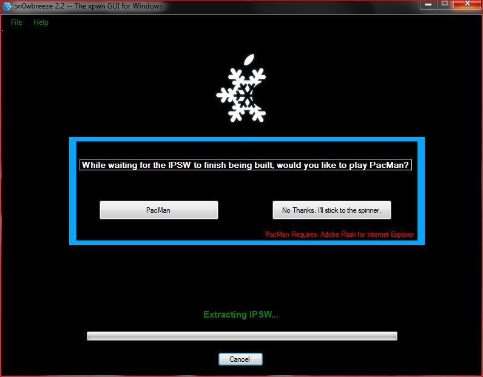

Ecco la giuda per Sn0wbreeze, il tool per Windows che effettua il Jailbreak del firmware 4.3.1, 4.3.2 e 4.3.3. Di seguito la guida e i link per il Download.
Requisiti:
- Snowbreeze 2.5.1 (per Firmware 4.3.1) salvato sul PC (Download)
- Sn0wbreeze 2.6 (per Firmware 4.3.2) salvato sul PC (Download)
- Sn0wbreeze 2.7.1 (per Firmware 4.3.3) salvato sul PC (Download)
- Un Device Apple con Firmware 4.3.1 o 4.3.2 o 4.3.3 (Tutti i Device sono Jailbreakabili, tranne l’iPad2)
- Il Firmware 4.3.1 o 4.3.2 o 4.3.3 del proprio dispositivo salvato sul PC (di seguito)
ATTENZIONE: scaricate i firmware con un browser diverso da Internet Explorer, poiché altrimenti sarà inutilizzabile!
Se dovete fare il jailbreak del firmware 4.3.1 scaricate uno dei seguenti firmware (relativamente al vostro dispositivo).
- Firmware 4.3.1 per iPhone 4
- Firmware 4.3.1 per iPhone 3gs
- Firmware 4.3.1 per iPod Touch 4g
- Firmware 4.3.1 per iPad 1g
Se dovete fare il jailbreak del firmware 4.3.2 scricate uno dei seguenti firmware (relativamente al vostro dispositivo).
- Firmware 4.3.2 per Iphone 4
- Firmware 4.3.2 per iPhone 3gs
- Firmware 4.3.2 per iPod Touch 4g
- Firmware 4.3.2 per iPad 1g
Se dovete fare il jailbreak del firmware 4.3.3 scricate uno dei seguenti firmware (relativamente al vostro dispositivo).
Consigli preliminari
Questi consigli non sono necessari ma estremamente consigliati.
- Effettuare un backup con iTunes prima di effettuare qualsiasi operazione.
- Assicurarsi di aver salvato il proprio ecid prima di procedere. Se non sapete come farlo seguite questa video-guida.
- Dopo aver effettuato il backup con iTunes formattate il vostro iPhone in modo tale da effettuare un installazione più pulita. Dopo aver effettuato il jailbreak ripristinate applicazioni, info, impostazioni ecc. tramite iTunes.
Procedimento
Aprite Sn0wbreeze e

verrete subito indirizzati in una Pagina di benvenuto. Andate avanti, saltate i “Crediti” e vi troverete davanti a questa pagina.
Premete sulla Freccia blu, e dovrete a questo punto, selezionare il Firmware 4.3.1 o 4.3.2 o 4.3.3, premendo su “Browse“.

A questo punto comincerà ad identificare il Firmware:

A questo punto (solo se avete un iPhone 3GS) vi sarà chiesto se è Old o New Botroom. Nel dubbio selezionate New Bootrom!

{kind=link}
{kind=link}
{kind=link}
Dopo (o se NON avete un iPhone 3GS), vi ritroverete difronte questa Finestra:
Andate “Avanti”. Vi troverete quindi davanti a questa finestra:

Qui dovete premere su “Baseband Preservation Mode” se possedete un iPhone Straniero, in modo da preservare la Baseband (SENZA PERO’ ESEGUIRE IL jAILBREAK) , altrimenti premete su “Expert Mode“, se volete eseguire anche il Jailbreak (Sn0wbreeze non upgraderà la vostra Baseband comunque). Premete, quindi, sempre sulla Freccia Blu.
Vi troverete davanti a questa finestra. Qui premete “General” (e poi la Freccia Blu),
{kind=link}
e vi troverete davanti questa Finestra:
{kind=link}
Una volta aperta la finestra dovrete: Disattivare l’opzione “Activate the iPhone [Hacktivate]” se il vostro telefono è gia attivato (ovvero se non chiede di essere collegato ad iTunes con una SIM Valida), altrimenti lasciarlo con la spunta; attivare o disattivare “Installed Animated BootLogos” se volete o meno un BootLogo (logo all’accensione del Device) Animato. Tramite il Pannello “Springboad Modification” a sinistra, potete: Attivare/Disattivare la percentuale della batteria e Attivare/Disattivare le Gestures a quattro dita. In “Root Partition Size” consiglio di lasciare quella di Default. A questo punto premete sulla Freccia Blu per andare Avanti.

Qui potete inserire già da prima i Packages o le Sources di Cydia, in modo da trovarle già inserite. Premete la Freccia, quando avrete finito.
 La Finestra sopra serve per installare la Baseband dell’iPad (06.15.00), l’unico modo al momento per rendere possibile lo sblocco della parte telefonica tramite Ultrasn0w, ma estremamente pericolosa; non si sanno infatti gli effetti che potrebbe procurare in futuro.
La Finestra sopra serve per installare la Baseband dell’iPad (06.15.00), l’unico modo al momento per rendere possibile lo sblocco della parte telefonica tramite Ultrasn0w, ma estremamente pericolosa; non si sanno infatti gli effetti che potrebbe procurare in futuro.

A questo punto premete su “Build IPSW” (e poi sulla Freccia Blu). Si avvierà il processo di Creazione del Custom Firmware, e nel frattempo potrete scegliere se vedere la classica barra di caricamento, oppure giocare a Pac-Man.
{kind=link}
Alla fine del processo, salvate in una cartella a vostra scelta il File, aprite iTunes e premete sul tasto “Rispristina”, contemporaneamente tenendo premuto “Shift” sulla tastiera. Scegliete il File IPSW che avevate precedentemente salvato ed aspettate la fine del Ripristino. Vi ritroverete Cydia sulla Springboard.
Fine della Guida 
Se avete domande o perplessità, o volete segnalarmi imperfezioni, lasciate un commento! 
Pingback: Rilasciato Sn0wbreeze per il Jailbreak del Firmware 4.3.2! | Mauro's Page